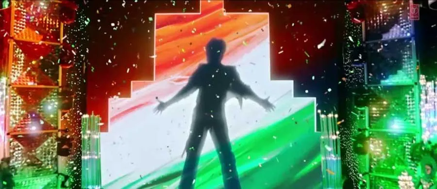

Part VIII · KING: The Royal Flush · 45 of 57
Chapter 43 · Picture Abhi Baaki Hain
There is a film called KING. There are businesses, partnerships, investments and public milestones. There is a history of digital experiment that deserves a closer look. And there is an audience whose scale and imagination keep the question alive. (Analysis)

The open arms. (Image: Final Thesis archive)
The evidence gives us the cards. It does not reveal the hand. (Analysis)
So, what is Mr. Khan cooking? Another blockbuster? Another business? A new technology partnership? A new chapter in how a star and his audience meet? Or something the industry has not yet understood? (The author’s questions)
The picture is still in the rough. Perhaps that is the point.
Picture abhi baaki hain. KING akela kaafi hain.
The line is borrowed from his own film. “Picture abhi baaki hai mere dost”, the picture is not over yet, my friend, is a line from Om Shanti Om (2007), the Red Chillies film of Chapter 8, whose dialogues were written by Mayur Puri; its director, Farah Khan, counts it among the film’s lines people still use in daily life. (Fact. Filmibeat, 9 Nov 2022) This book borrows it for the same reason: each time the record says the story of his digital empire has ended, another chapter begins. (Analysis)
From the Final Thesis
Added from the Final Thesis, word for word. Where a figure here differs from the sourced figure earlier in this chapter, the chapter’s figure stands; see Addendum B.
The Picture Is Still in the Rough
Let us return to where the story began.
Ra.One. A digital experiment that attempted to turn a film into an entertainment property.
Chennai Express. A campaign that brought together social media, analytics, fan communities, digital products, and participation on a reported scale of more than one billion cumulative tweet impressions.
ZERO. A symbolic endpoint.
October 2021. A personal crisis that led the author to question the difference between a commercial fan base and a durable community.
Pathaan. Jawan. Dunki. The return of the superstar to the centre of the theatrical and commercial conversation.
And now, KING.
Alongside it, a collection of developments in endorsements, wealth estimates, cricket, global business, and interactive technology.
Each development has its own explanation. Each belongs to a different commercial context. None proves the existence of a secret, coordinated plan.
But the combination creates a fascinating question for anyone interested in the future of entertainment.
What would happen if the digital ambition of Ra.One and Chennai Express were combined with the commercial reach of the 2023 comeback, the possibilities of modern AI, and a fan ecosystem designed to last beyond the next release?
What would happen if fans were given the tools to become active participants in the cultural life of the property?
What would happen if the audience was no longer treated simply as a market to be reached, but as a creative community whose voluntary participation could help an entertainment universe grow?
And what would happen if the next chapter of the Shah Rukh Khan story were not just about the King returning to the screen, but about the relationship between the King and the kingdom being reimagined?
There is no verified answer in the public record available for this study.
There is a film called KING.
There are businesses, partnerships, investments, and public milestones.
There is a history of digital experimentation that deserves closer examination.
And there is an audience whose scale, creativity, and cultural influence continue to make the question relevant.
The evidence gives us the cards.
It does not reveal the hand.
So, what is Mr. Khan cooking?
Is it another blockbuster?
Another business expansion?
A new technology partnership?
A new chapter in celebrity marketing?
Or is the larger opportunity something that the industry has not yet fully understood?
The picture is still in the rough.
And perhaps that is precisely the point.
Picture abhi baaki hain.
(Final Thesis, section 50)
The King doesn’t fold
In 2011, Ra.One attempted something that was larger than a film campaign.
It connected a character to a digital identity, a game, merchandise, publishing, technology and a network of commercial partners.
In 2013, Chennai Express demonstrated how social-media participation and analytics could become a measurable part of entertainment marketing.
Between 2014 and 2018, Shah Rukh Khan continued to release films and generate substantial commercial activity. The particular ecosystem-led approach of the earlier campaigns became less visible in the public record, but the reasons for that change remain to be established.
In October 2021, a personal family crisis brought a different kind of silence into the public narrative.
In 2023, Pathaan, Jawan and Dunki generated approximately ₹2,669 crore in combined worldwide gross according to one trade dataset.
The subsequent commercial and fan-facing activity, the FLAM investment connection and the arrival of KING create an opportunity to revisit the earlier digital experiments from a new technological perspective.
But the most interesting conclusion is not that a secret plan has been proven.
It is that the original question has become more relevant.
What does it mean to market a film when the audience is no longer simply an audience?
What happens when fans can create, collaborate, participate and potentially earn from their contributions?
Can a character universe become a lasting creative platform?
Can technology support that relationship without turning the audience’s identity, likeness or labour into an unconsented commercial asset?
And can the lessons of Ra.One and Chennai Express help the entertainment industry build a model that is more participatory, more measurable and more sustainable?
These are the questions this case study leaves open.
The title is a provocation.
The evidence is the foundation.
The future is the question.
ASOKA TO BOO-DA.
The ghost of the sage’s present.
The King is not renouncing.
He is doubling down.
PICTURE ABHI BAAKI HAIN.
KING AKELA KAAFI HAIN.
And the Royal Flush?
The game is still being played.
(Final Thesis, section 69)